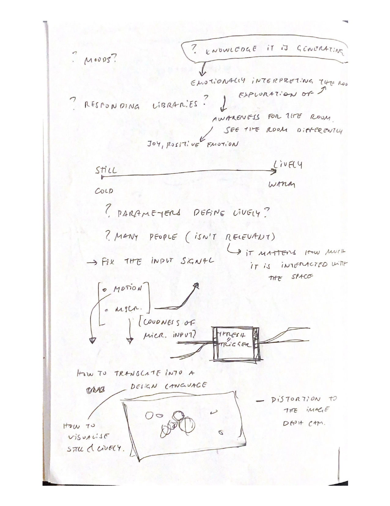
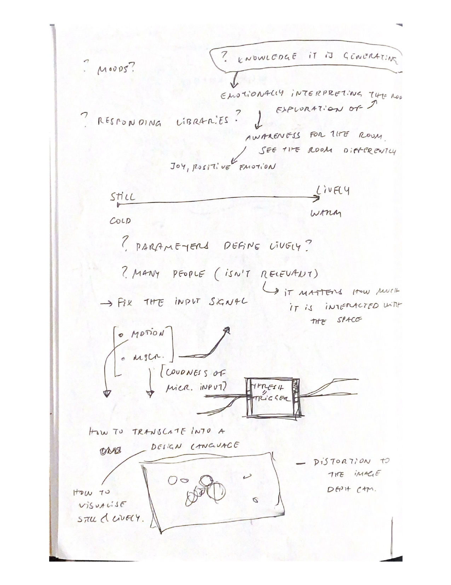
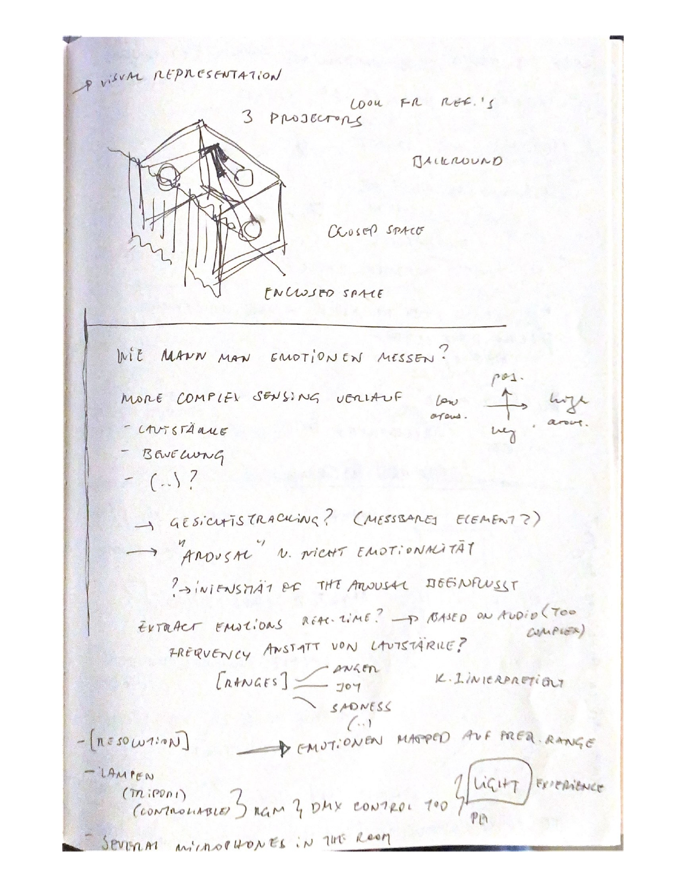
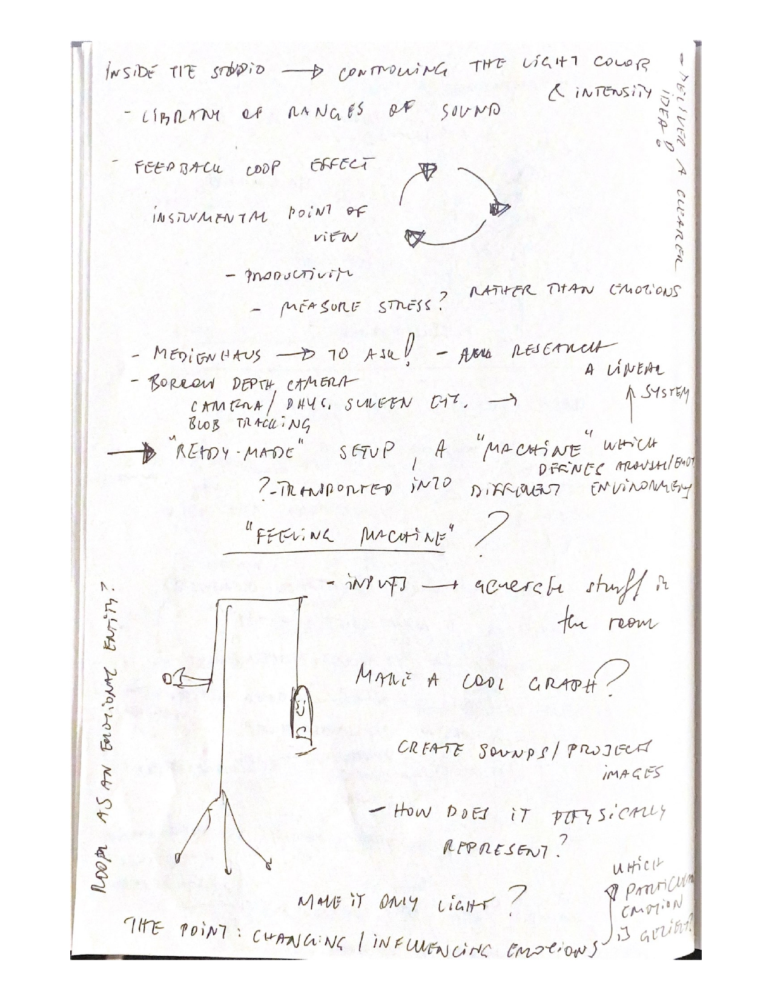
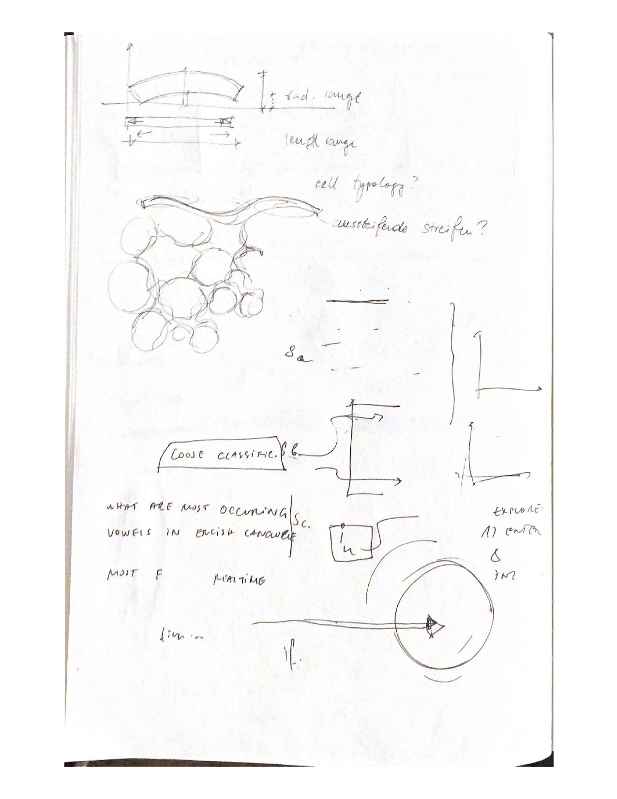
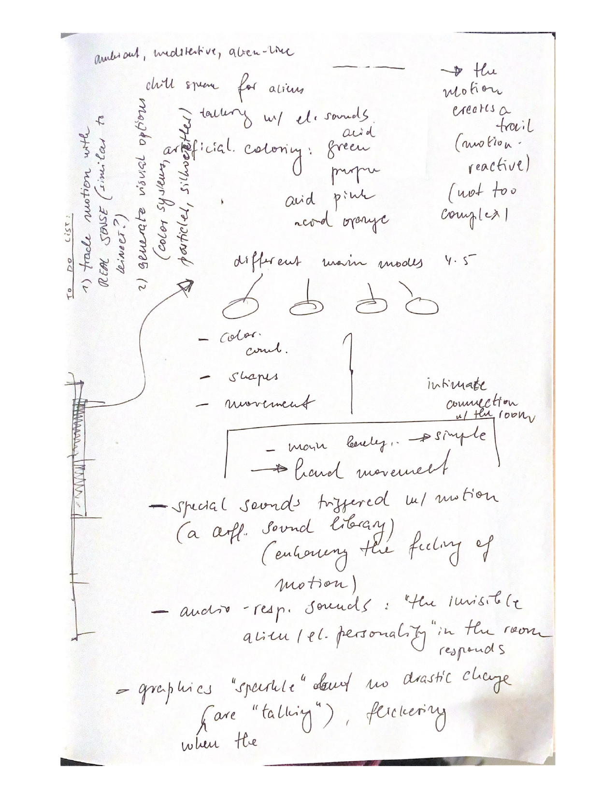
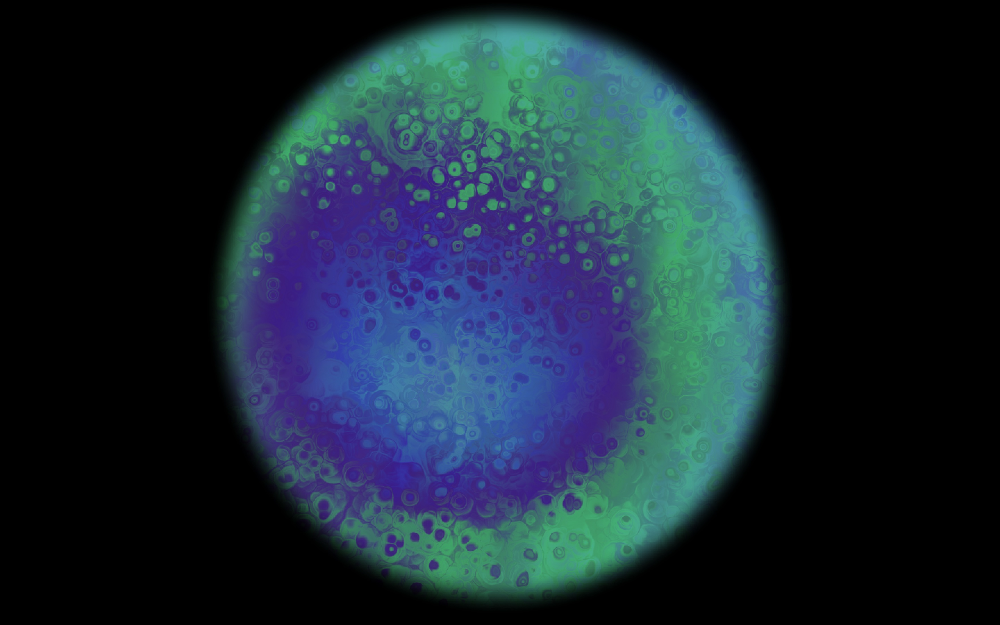
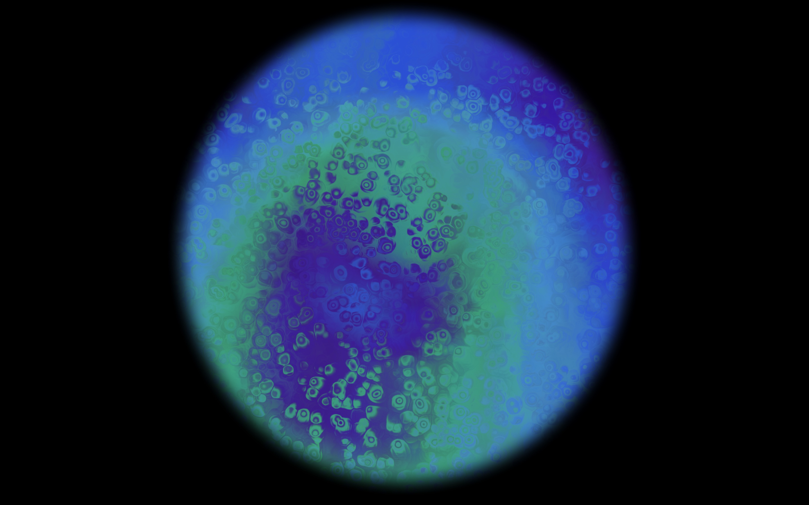

Die Emotionale Beziehung mit dem Raum
D&C Raum als Interface, Lora Bourova, Guo Chen & Maximilian Molitor
Im zweiten Projekt des Raum als Interface Seminars, haben wir als Team Lora, Keny und Max anfangs viel diskutiert.
Wir mussten uns auf ein gemeinsam Konzept einigen, welches die Interaktionsmöglichkeit mit dem Raum erweitern würde, insbesondere durch Digitalität.
Dabei hatten wir erst viele Ideen gesammelt, und eine Liste mit 8 Ideen entwickelt. Beispielsweise eine
physische Pflanze in einem Raum zu platzieren, welche auch mit einer digitalen Repräsentation der Pflanze verbunden wäre;
verschiedene Aktionen, wie das streicheln der Pflanze, oder das gießen der Pflanze, würden sich auf die physische, wie auch die digitale
Pflanze auswirken. Auch hatten wir überlegt, eine digitale Landschaft auf den Boden eines Raumes zu projizieren, welche sich durch Audio-Interaktion
verändern ließe. Nach einem relativ langen Iterationsprozess hat sich dabei unsere Kernidee
'people's emotional relationship with the room' ausgebildet - die emotionale Beziehung des Menschen mit dem Raum.
Denn viele der Ideen die wir diskutiert hatten, hatten immer eine emotionale Dimension. Es ging immer um ein emotionales Verhältnis mit dem Raum selbst, oder
mit etwas was im Raum installiert sein würde, eine oft übersehene, aber wichtige Komponente des Raums.
Folgende Skizzen Loras' bilden unseren Arbeits- und Ideenfindungsprozess ab.


 





Innerhalb unserer Arbeit zum Konzept 'people's emotional relationship with the room' und in Vorbereitung auf das Weihnachts-Showing, ging es in unseren Gesprächen um zwei Kernthemen.
Erstens, die graphische interpretation verschiedener Emotionen. Beispielsweise in der folgenden Situation: die Lautstärke im gemessenen Raumabschnitt
ist hoch, viele Menschen bewegen sich viel, die Stimmung ist als angeregt, aufgerecht, aufgeladen. Wie würde ein graphische Projektion ausehen, welche genau diese
Stimmung der Menschen adequat wiederspiegelt? Über diese Zusammenhänge, zwischen gemessenen Indikatoren, verschiedener Stimmungen und Emotionen und möglichen graphischen
Interpretationen hatten wir gesprochen. Zweitens über Fragen wie:
was sind Emotionen überhaupt und wie können wir sie messen. Sehr psychologisch-philosophische Fragen, inwiefern überhaupt Indikatoren und Messungen
von Verhalten und physiologischen Reaktionen überhaupt eine Inferenz auf interne Emotionen ermöglichen. Emotions-Begriffe sind teilweise auch aus der Motivation heraus,
psychologisch-definierte Konzepte für eine Operationaliserung bereitzustellen, festgelegt worden.
Andererseits, gilt es festzuhalten das verschiedene Emotionen unabhängig von Kultur und Sozialer Gruppe präsent scheinen,
also dem Menschen Inherent scheinen.
Hebb sagt beispielweise, dass wir aus allen Spezies, die emotionalste sind (Hebb, 1980).
Und Emotionen scheint es auch bei anderen Tieren, wie beispielsweise bei Affen, zu geben.
Jedoch gibt es generell methodischen Problematiken, die auch
psychologische Experimente beachten müssen, wenn es darum geht, das kulturell stark aufgeladene Konzept, Emotion zu untersuchen (siehe beispielsweise Davidson, 2003).
Aus psychologischer Sicht, gibt es eine Unterscheidung zwischen Emotion und physiologisch-körperlichen Reaktion, oftmals auch unter dem Begriff Affekt gefasst. Physiologisch-körperliche Reaktionen sind beispielsweise Schwitzen, Zittern, oder erhöhter Herzschlag, in Reaktion auf interne Emotionen. An dieser Stelle würde ich gerne eine berühmte Definition James' zitieren: "everyone knows what attention is" (James, 1890). Jede Person weiß was Aufmerksamkeit ist, und hier würde ich auch vermuten, dass jede Person, die diesen Text liest weiß was Emotion ist. Und obwohl, jede(r) weiß was Emotion ist, möchte ich darauf aufmerksam machen, dass es schwer ist eine Definition zu finden, bzw. es viele verschiedene gibt, aber eine mögliche wäre:
Emotionen werden als bewusste, subjektive Erlebnisse, begleitet von körperlichen Reaktionen, wahrgenommen, welche in Reaktion auf unsere Umwelt entstehen und eher kürzerer zeitlicher Dauer sind (im Unterschied zu einer längeren Empfindung, Befinden, Stimmung).
Dabei kommt natürlich die Frage auf, inwieweit diese beiden Komponenten (Emotion und körperliche Reaktion) zusammenhängen. Ist unser subjektives Erleben von Emotionen, beispielsweise die Emotion, die durch ein schokierendes Ereignis, wie bei einem drohendem Straßenunfall (Abb. 3), entsteht, unserer körperlichen Reaktion auf die Situation zeitlich nachgestellt? also eine Reaktion auf diese? Oder, reagiert unser Körper mit Schock, Zittern, Lähmung, auf unser subjektives Erleben? weil wir uns schokiert fühlen?
„Wir sind traurig, weil wir weinen, wütend, weil wir zuschlagen, wir haben Angst, weil wir zittern.“ (James, 1890).
3 Verschiedene psychologische Theorien stellen mögliche Zusammenhänge zwischen körperlicher Reaktion und subjektives Erleben auf (Abb. 3). In der James-Lange Theorie gibt es, beispielsweise auf eine erschreckende Situation in der Umwelt (heranrasendes Auto), erst eine körperliche Reaktion, durch z.B. erhöhtes Herzklopfen, welche dann, unter anderem, die Emotion Angst auslöst. In der Cannon-Bard Theorie finden beide Kompenenten, körperliche Reaktion und Emotion, gleichzeitig und parallel statt. Letztlich wurde in der Schachter-Singer Zwei Faktoren Theorie, die gleichzeitig-stattfindende bewusste kognitive Bewertung körperlicher Reaktionen, und der nachfolgend-entstehenden Emotion, postuliert. Verschiedene Belege finden sich zu allen Theorien. Myers schreibt 2008, dass die meisten Wissenschaftler*innen jedoch die Cannon-Bard Theorie, oder die Schachter-Singer Zwei Faktoren Theorie für wahrscheinlich halten.
Aus psychologischer Sicht, gibt es eine Unterscheidung zwischen Emotion und physiologisch-körperlichen Reaktion, oftmals auch unter dem Begriff Affekt gefasst. Physiologisch-körperliche Reaktionen sind beispielsweise Schwitzen, Zittern, oder erhöhter Herzschlag, in Reaktion auf interne Emotionen. An dieser Stelle würde ich gerne eine berühmte Definition James' zitieren: "everyone knows what attention is" (James, 1890). Jede Person weiß was Aufmerksamkeit ist, und hier würde ich auch vermuten, dass jede Person, die diesen Text liest weiß was Emotion ist. Und obwohl, jede(r) weiß was Emotion ist, möchte ich darauf aufmerksam machen, dass es schwer ist eine Definition zu finden, bzw. es viele verschiedene gibt, aber eine mögliche wäre:
Emotionen werden als bewusste, subjektive Erlebnisse, begleitet von körperlichen Reaktionen, wahrgenommen, welche in Reaktion auf unsere Umwelt entstehen und eher kürzerer zeitlicher Dauer sind (im Unterschied zu einer längeren Empfindung, Befinden, Stimmung).
Dabei kommt natürlich die Frage auf, inwieweit diese beiden Komponenten (Emotion und körperliche Reaktion) zusammenhängen. Ist unser subjektives Erleben von Emotionen, beispielsweise die Emotion, die durch ein schokierendes Ereignis, wie bei einem drohendem Straßenunfall (Abb. 3), entsteht, unserer körperlichen Reaktion auf die Situation zeitlich nachgestellt? also eine Reaktion auf diese? Oder, reagiert unser Körper mit Schock, Zittern, Lähmung, auf unser subjektives Erleben? weil wir uns schokiert fühlen?
„Wir sind traurig, weil wir weinen, wütend, weil wir zuschlagen, wir haben Angst, weil wir zittern.“ (James, 1890).
3 Verschiedene psychologische Theorien stellen mögliche Zusammenhänge zwischen körperlicher Reaktion und subjektives Erleben auf (Abb. 3). In der James-Lange Theorie gibt es, beispielsweise auf eine erschreckende Situation in der Umwelt (heranrasendes Auto), erst eine körperliche Reaktion, durch z.B. erhöhtes Herzklopfen, welche dann, unter anderem, die Emotion Angst auslöst. In der Cannon-Bard Theorie finden beide Kompenenten, körperliche Reaktion und Emotion, gleichzeitig und parallel statt. Letztlich wurde in der Schachter-Singer Zwei Faktoren Theorie, die gleichzeitig-stattfindende bewusste kognitive Bewertung körperlicher Reaktionen, und der nachfolgend-entstehenden Emotion, postuliert. Verschiedene Belege finden sich zu allen Theorien. Myers schreibt 2008, dass die meisten Wissenschaftler*innen jedoch die Cannon-Bard Theorie, oder die Schachter-Singer Zwei Faktoren Theorie für wahrscheinlich halten.

Abb. 3: 3 verschiedene Theorien der Emotion, bzgl. des Zusammenhangs zwischen Emotion und physiologishen Reaktionen: James-Lange Theorie, Cannon-Bard Theorie und Schachter-Singer Zwei-Faktoren Theorie. Abbildung übernommen aus Myers, 2008.
Für das Weihnachts-showing haben wir unsere Idee konkretisiert, und eine erste Version, eine Art 'Mock-Up' zum Konzept
'people's emotional relationship with the room' entworfen.
Dabei haben wir in einem Teil des Raumes Audio- und Bewegungsdaten gemessen. Diese sollten dann im Computer interpretiert werden und
als visuelles Signal auf denselben Teil des Raum projiziert werden. Umgesetzt mit dem Programm Touchdesigner, sollten die gemessenen, Audio- und Bewegungsdaten als projizierte, visuelle-graphische Ausdrücke,
die Stimmungen und Emotionen der Menschen im Raum wiedergeben und spiegeln (Abbildung 1).
Im Mock-up wurden keine Audio- und Bewegungsdaten gemessen und, stattdessen, eine sich-wiederholende
Graphischen Aufnahme auf eine Wand projiziert (Abbildung 2).
Letztendlich, im vollständig ausgearbeiteten Projekt, sollte eine Art Gespräch mit dem Raum entstehen, ein Feedback-Loop, mit graphischen Interpretationen der
emotionalen Stimmung der Menschen im Raum. Es sollte ein emotionales Gespräch mit dem Raum entstehen, bzw. die emotionale Dimension von des Raums exploriert werden.
Dieses angestrebte Gespräch, oder die Interaktion, hatten wir auf unserem Poster als Diagramm aufgefasst.

Abbildung 1. Das Poster des Weihnachts-Showings

Abbildung 2. Unsere Installation am Weihnachtsshowing, mit Poster und Projektionsfläche
Ab dem Weihnachts-showing haben wir dieses Projekt weiter verfeinert. Dabei hat Lora an der graphischen Interpretation im Programm Touchdesigner gearbeitet.
Dabei


Davidson, R. J. (2003). Seven sins in the study of emotion: Correctives from affective neuroscience. Brain and Cognition, 52(1), 129-132.
Hebb, D. O. (1980). Essay on mind. Hillsdale, NJ: Erlbaum. 9–16. (pp. 230, 371).
Myers, D. G. (2008). Exploring psychology in modules New York. NY: Worth.
Hebb, D. O. (1980). Essay on mind. Hillsdale, NJ: Erlbaum. 9–16. (pp. 230, 371).
Myers, D. G. (2008). Exploring psychology in modules New York. NY: Worth.